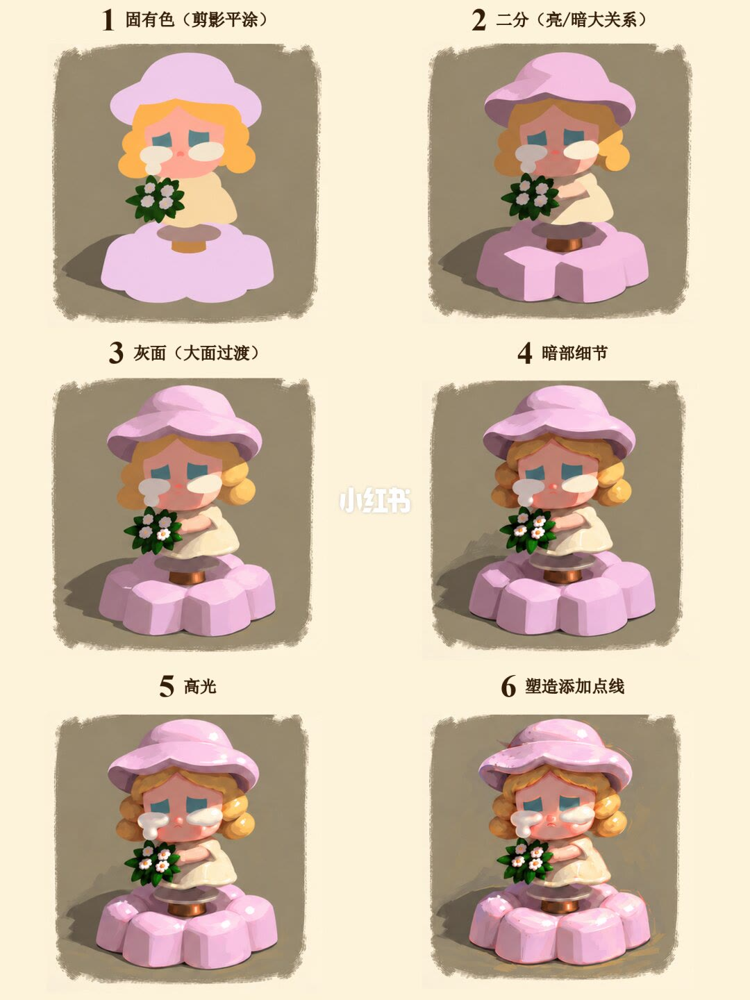
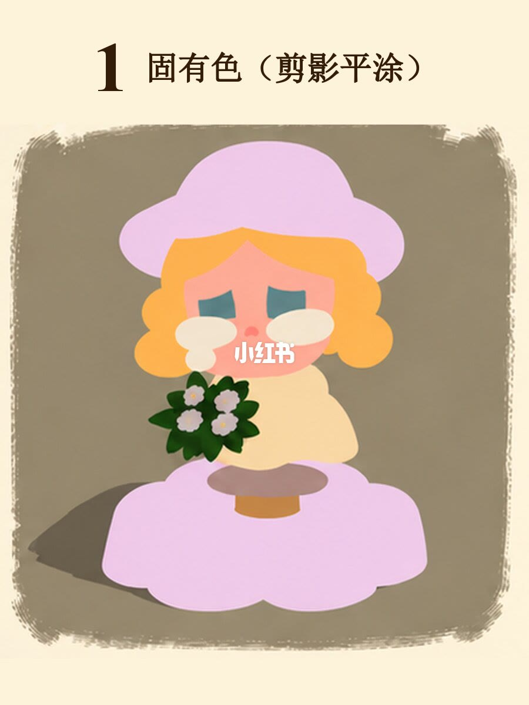
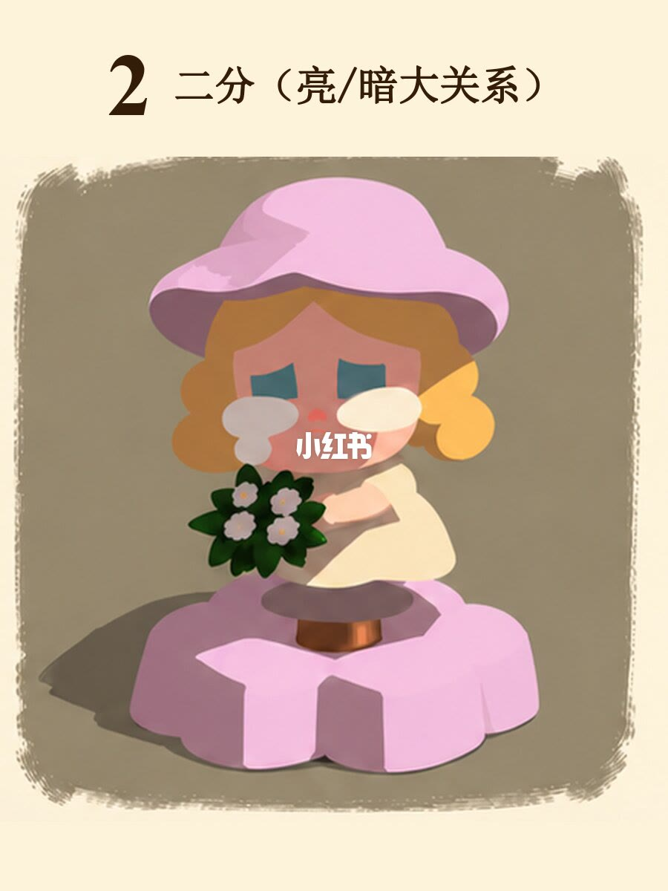
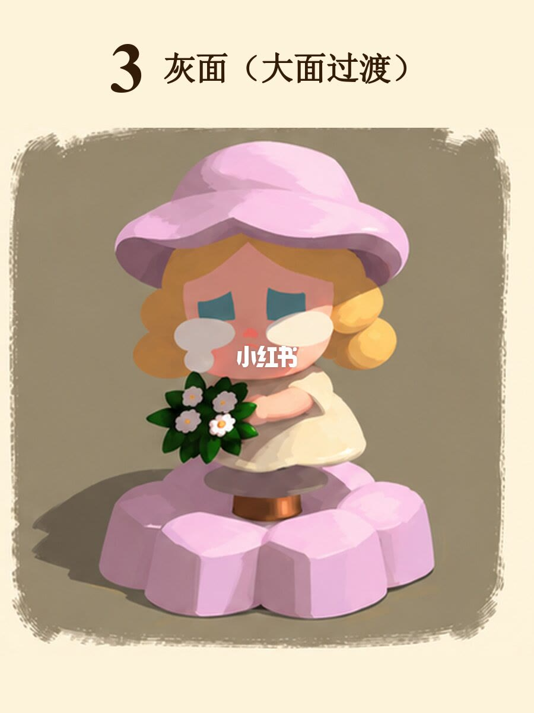
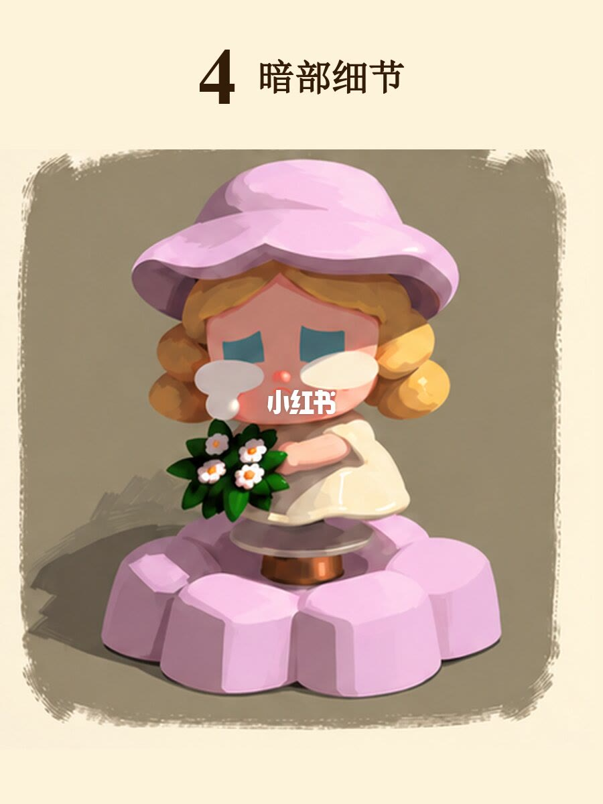
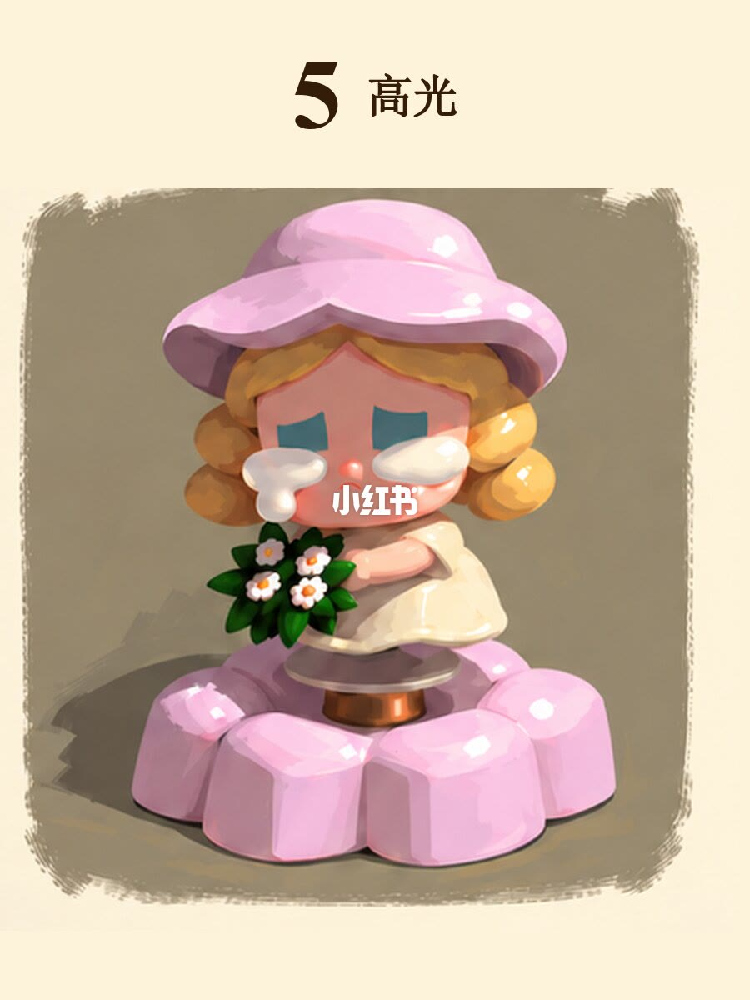
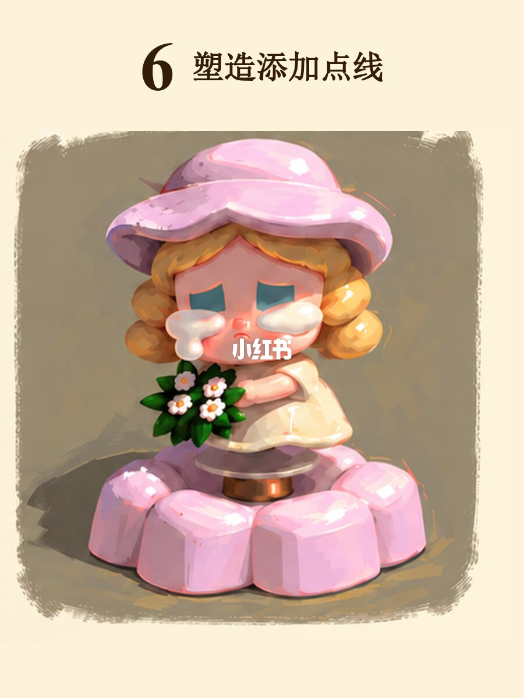

图文实录 · 小红书 · 杭州大云画室（翼帛）
六张图带你理清绘画步骤
六步是同一只小人偶上的分层许可：先固有色平涂，再只分亮暗，再只在亮部和明暗交界加灰面，然后才动暗部深处，高光只点最亮处，最后用少量点线收结构。七页里第一页是六格总览，后六页各放大一步。
1/7
六步并排
这一页是两列三行，同一角色走完六步。角色是戴宽檐粉帽的黄发小人，眼下有白色块，穿浅色裙子，手里一束深绿叶和白色小花，站在粉色分瓣底座上，底座和身体之间有一小段棕色连接。每格背后是一块边缘发毛的深灰褐，整页底是浅米色。列与列之间有浅色「小红书」水印。
六格标题能对上：固有色（剪影平涂）、二分（亮/暗大关系）、灰面（大面过渡）、暗部细节、高光、塑造添加点线。前四格的序号是 1 到 4。第五格能读出「高光」，印出来的数字在识读里和 6 混过一次，无法确认；单页第 6 张的标题是「5 高光」，序号以单页为准。第六格是「塑造添加点线」。

2/7
固有色，剪影平涂
页首大字「1」，标题「固有色（剪影平涂）」。帽子和底座是浅粉，头发是亮黄，脸是桃粉，裙子接近乳白，花束是深绿加小白花，连接处是棕色。色块平，人物内部没有亮面、灰面、暗面。眼睛是两块偏蓝的竖条，鼻尖有一小块暖色，红还是粉无法确认。脸中央压着白色「小红书」水印。
背景深灰褐上、人物一侧有一块更深的灰。这块灰在左还是在右，这一页无法确认。笔记正文写：先按固有色整体平涂，只看大形和颜色关系，不急着塑造体积。这句话在正文里，不在画面标题上。

3/7
二分，只立亮暗
标题「2 二分（亮/暗大关系）」。帽、发、脸、裙、底座都分成两档：受光一侧留着上一步的固有色，背光一侧压成一块更深、更闷的色，交界偏硬，灰面还没有铺开。体积是靠这两块的位置读出来的，不是靠渐变。
受光面集中在左上方这一读法，能对上帽子和头发的亮侧。投影落在左、右还是右下方，这一页的边角不够稳，无法确认。正文写：只区分亮部和暗部；亮部保持固有色，暗部统一压成一个色块，先把大关系立住。

4/7
灰面，只转大面
标题「3 灰面（大面过渡）」。帽顶、脸颊和粉色底座这些大曲面上，亮部和暗部之间出现了中间调，笔触还在，形比上一步圆。交界不再是一条硬切。
正文写：只在亮部和明暗交界附近增加灰面，让体积慢慢转起来；暗部继续保持第二步不变。图上能确认大面有了过渡。暗部有没有被改动，这一页无法和上一页逐块核对，按正文的许可，这一步不该去动暗部。

5/7
暗部细节
标题「4 暗部细节」。从这一页起暗部才被打开。帽檐底下、下巴底下、身体和底座相接的地方，出现更深的小色块；裙褶和底座分瓣也更清楚。暗部不是纯灰，带着各自固有色压深后的粉、黄、绿。
正文写：在最深处加入更重的小色块，和少量环境色、反光，用来丰富暗部层次。哪一小块是环境色、哪一小块是反光，画面上没有标注，无法确认。

6/7
高光只点最亮处
标题「5 高光」。帽顶、发卷高处、花束边缘和底座分瓣的受光转折上，出现小块很亮的光斑和短光条，边缘偏清楚。亮的是这些点，不是整片帽子或整片底座被提亮。
眼下白色块在这一页更像泪滴；它从第 1 步就在，是造型而不是这一步新点的高光。高光是不是纯白，没有色值，无法确认。正文写：只在最亮的位置点少量高光，不要整片提亮，避免把画面画「粉」。

7/7
塑造，添加点线
标题「6 塑造添加点线」。这一步在已经分开的块面上补小亮块、小暗块、边缘线和细节点：发卷之间、底座分瓣之间用线分开，眼睛、帽缘和底座边缘上有很小的亮点。大的粉、黄、乳白色块还在，笔触没有被涂成光滑皮肤。
正文写：最后补少量小亮块、小暗块、边缘线和细节点，让结构更完整，同时保留明显的块面和笔触。光源仍读得出偏左上；投影的精确落点，和前面几页一样无法确认。

收尾
每一步只动被许可的那一层
结论：理清步骤，就是按 2/7 到 7/7 的顺序分层。固有色只铺大形，二分只立亮暗，灰面只转大面，暗部细节才进暗部，高光只点最亮处，点线最后收结构。1/7 用来检查有没有跳步。
支撑页：顺序和每步许可在正文，并分别落在 2/7、3/7、4/7、5/7、6/7、7/7。1/7 把六步放在同一角色上，方便对照形变了没有、颜色关系还在不在。
边界：这是一只小人偶的示范，没有笔刷、色号和光比。环境色和反光没有在画面上标出。投影落在哪一侧无法确认。总览第五格的印字序号无法确认，以单页「5 高光」为准。眼下白块从第一步就在，不要当成高光步骤才加上的。